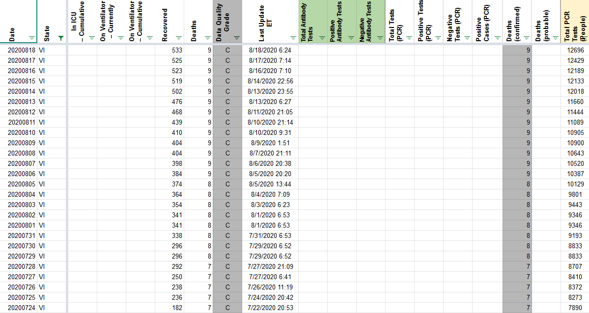
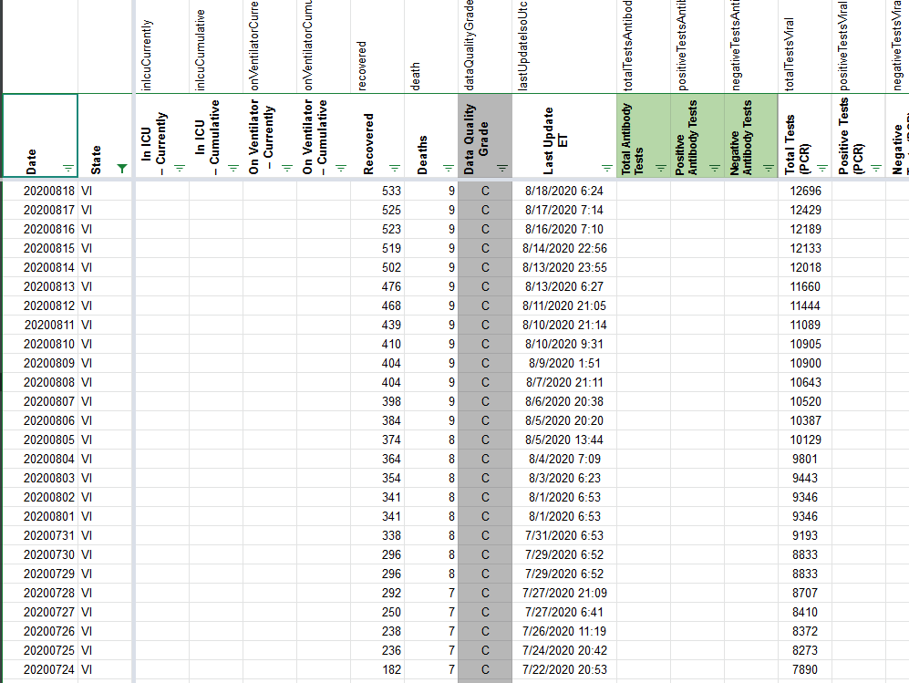
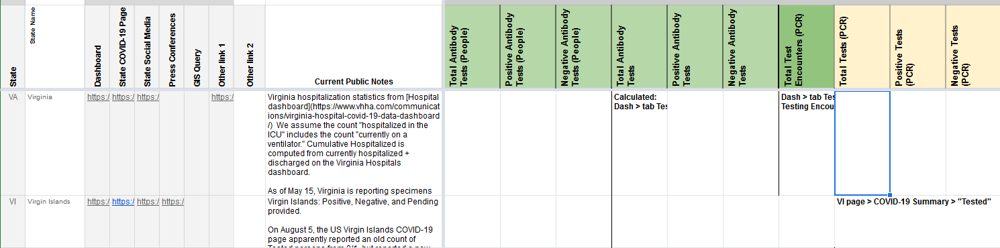

[VI] SVP Fixes: Move Total Tests PCR (People) values to Total Tests (PCR) since reporting units are unknown
Issue number 777
muamichali opened this issue on August 19, 2020 at 7:38 am
Labels Data quality stale
State or US: US Virgin Islands
Describe the problem
- [x] 1. Move
Total Tests PCR (People)values toTotal Tests (PCR)since reporting units are unknown - [x] 2. Update current capture in WS2 and source notes in States Matrix to reflect the change to
- [ ] 3. Consider Backfill time-series before 5/13 from pos+neg
Link to data source
muamichali added the label Data quality on August 19, 2020 at 7:38 am
muamichali closed the issue on August 19, 2020 at 8:06 am
muamichali reopened this on August 19, 2020 at 8:06 am
stale[bot] commented on September 3, 2020 at 8:22 am
This issue has been automatically marked as stale because it has not had recent activity. It will be closed if no further activity occurs. Thank you for your contributions!
stale[bot] added the label stale on September 3, 2020 at 8:22 am
stale[bot] commented on September 13, 2020 at 9:13 am
This issue has been closed because it was stale for 15 days, and there was no further activity on it for 10 days. You can feel free to re-open it if the issue is important, and label it as “not stale.”
stale[bot] closed the issue on September 13, 2020 at 9:13 am
BEFORE 
AFTER 
WS2 